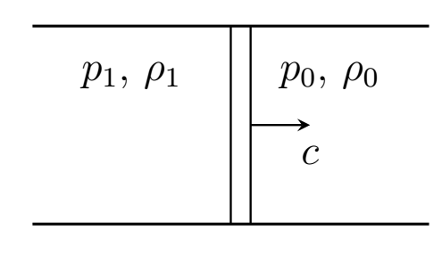
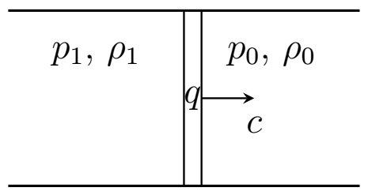
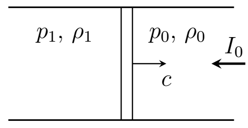

Y23 (2023) — English translation
Combustion is an exothermic chemical reaction (fuel + oxidizer), accompanied by positive specific heat release. Under certain conditions, it can be self-sustaining, in contrast to endothermic (accompanied by the absorption of heat) reactions. For example, when a source of ignition occurs in a pre-mixed gas mixture of fuel and oxidizer, a combustion wave can form. Detonation is a combustion mode in which a shock wave propagates through a substance, initiating chemical combustion reactions that support the movement of the shock wave.
A flame front is a narrow reaction zone of a propagating flame in which combustion occurs. This task asks you to study the propagation of detonation shock waves in a gas.
Let the gas move through a thermally insulated straight pipe of constant cross-section. The gas can be divided into two areas. In one region, the gas is motionless, its pressure is $p_0$, density is $\rho_0$. In another region, all elements of the gas move at the same speed, gas pressure $p_1$, density $\rho_1$. The speed of movement of the boundary between these regions $c$ will be called the shock wave speed. The acceleration of free fall, as well as the thermal conductivity of the gas and its friction against the walls of the vessel can be neglected. Note: solving the problem will be significantly simplified if we reduce the gas movement to stationary. During stationary motion, the gas parameters at each point in space remain constant in time.
Note: solving the problem will be significantly simplified if we reduce the gas movement to stationary. During stationary motion, the gas parameters at each point in space remain constant in time.
A wave in which sharp jumps in pressure and density occur near the wave front is called a shock wave. Let us consider a one-dimensional flow of an ideal gas with the adiabatic exponent $\gamma$. In this part of the problem, you are asked to analyze the relationships between the parameters $p_0$, $\rho_0$, $p_1$ and $\rho_1$ in the shock wave.

Since there are no dissipations in the system, the energy in it is also conserved.
When heated, some gases begin a chemical reaction and ignite. A shock wave can then propagate through the gas, and combustion occurs in a very thin layer near the wave front. In this part of the problem we will consider a detonation wave. The main difference between this part of the problem and part A is that when the mass $\Delta{m}_0$ enters the motion of the system (when this mass passes through the wave front), a chemical reaction occurs and heat $\Delta{Q}=q\Delta{m}_0$ is released, where $q$ is a known quantity called the specific thermal effect of the chemical reaction.

Since during a chemical reaction the composition of the substance changes, the adiabatic index $\gamma$ also changes. Let us denote by $\gamma_0$ and $\gamma_1$ the adiabatic exponents of the stationary gas and the gas after the passage of the wave front, respectively.
Let us introduce the value of the specific volume $v=1/\rho$ for each state: $$v_0=\cfrac{1}{\rho_0},\qquad v_1=\cfrac{1}{\rho_1}. $$Обозначим зависимость $p_1(\rho_1)$, полученную при фиксированном значении скорости перемещения волнового фронта $c$ из комбинаций закона сохранения массы с законом сохранения импульса за $p_1(\rho_1)_\text{imp }$. Зависимость $p_1(\rho_1)$, полученную из комбинаций законов сохранения массы, импульса и энергии обозначим за $p_1(\rho_1)_\text{child}$. Далее работайте в приближении сильной детонационной волны, т.е волны, удовлетворяющей условиям: $$p_0\ll{p_1},\qquad \cfrac{p_0}{\rho_0}\ll{q}. $$
When studying detonation processes, Chapman and Jouguet hypothesized that the detonation combustion wave propagates at the minimum possible speed at which the equation $p_1(v_1)_\text{имп}=p_1(v_1)_\text{дет}$ has a unique solution, called the Chapman-Jouguet point. This statement was later proven by Zeldovich and Doering.
Under the influence of a strong electric field, the air is ionized and turns into plasma. A sufficiently strong field can be obtained by focusing laser radiation. The plasma, in turn, contains a large number of free charges and absorbs electromagnetic waves well, which leads to further heating of the plasma and propagation of the shock wave. On one side of the wave front there is plasma, on the other there is air. At the interface between air and plasma, laser radiation is absorbed and its energy is transferred to the plasma. Excessive pressure of heated air creates a shock wave propagating towards the laser radiation. This phenomenon is called light denotation wave. Ramsden and Savich proposed to describe such a wave as a detonation wave, in which the analogue of the specific thermal effect of the reaction $q$ is the value $$ q_{\text{св}} =\frac{I_0}{\rho_0 c}, $$где $I_0$ — интенсивность излучения. В одном из первых экспериментах, в которых наблюдалась светодетонационная волна, использовался лазер мощностью $P = 30 ~\text{MW}$, излучение которого с помощью линзы фокусировалось в кружок радиуса $r \approx 10^{-2}~ \text{cm}$, создавая интесивность $$ I \approx \frac{P}{\pi r^2}. $$ Электрическое поле вблизи фокуса линзы значительно больше поля $E_\text{probe}=30~\text{kV}/\text{cm}$, causing air breakdown, so it is enough to form a light-detonation wave.

Next, take the following data: $p_0=1.0 \cdot10^5~\text{Па}$ and $\rho_0=1.3~\text{кг}/\text{м}^3$ are the pressure and density of air at atmospheric pressure, respectively. The plasma equation of state can be described by the equation of state of an ideal gas with the adiabatic exponent $\gamma_1=4/3$. Work in the approximation of a strong wave, i.e. consider $p_0\ll{p_1}$ and $p_0c\ll{I_0}$.
Next, accept the following data:
Source: https://pho.rs/p/3487